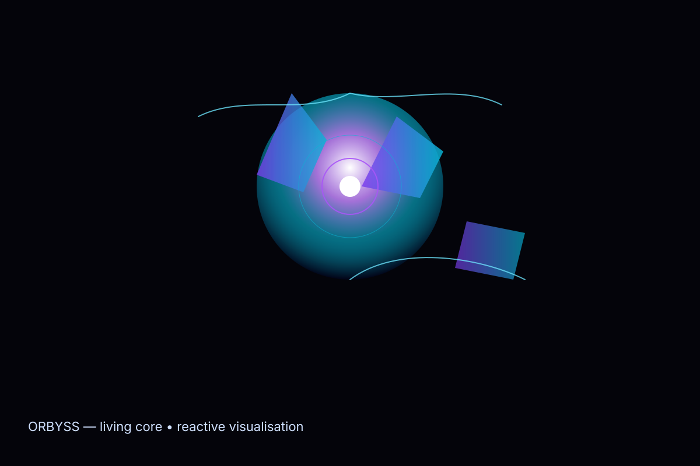

OBSID‑Studio — Un studio IA local‑first qui organise, trace et transforme tes idées en livrables.
Arrête de te perdre dans les modèles, ports et scripts : OBSID relie tes moteurs locaux (ComfyUI, Forge, LM Studio, Ollama, TTS), orchestre des workflows réutilisables, indexe les outputs avec métadonnées et garde une mémoire projet exploitable.
Prototype en maturation — Founder Preview limitée. Nous cherchons des créateurs pour tester les premiers flux, donner du feedback et co‑construire.

Ce que fait OBSID‑Studio
Un cockpit local qui rend la génération (image, vidéo, musique, voix, texte) exploitable : orchestration, presets, gallery, versions, tâches, et export packagé pour clients.
Statut moteur réel : installé / absent / lancé / bloqué / preuve disponible — diagnostic automatique et actions guidées.
Creative Engines
Images, vidéo, musique, voix, texte — pipelines locaux orchestrés et préconfigurés.
Projects & Outputs
Galerie, thumbnails, metadata, recherche et historique projet.
Workflow Vault
Presets, templates, chaînes réutilisables pour production rapide.
Local Assistants
Guides, assistants de style et agents batch pour automatiser et documenter.
Modules & intégrations
OBSID connecte et supervise les outils locaux que tu utilises déjà :
ComfyUI, Forge, LM Studio, Ollama, TTS/STT, outils vidéo et audio locaux.
Contrôle et permissions pour interagir avec applications locales et fichiers.
Magasin de générateurs, presets, agents automatisés et packs (Generator Store).
Boucle d’intelligence
OBSID orchestre la boucle : OBSERVE → ANALYZE → PREDICT → ADAPT → ACT → LEARN — pour garder ton studio robuste, stable et productif.
ORBYSS — le cœur vivant
ORBYSS n’est pas une décoration : c’est une visualisation réactive et cristalline de l’état du studio — tensions, flux, génération, erreurs et récupération. Elle rend lisible l’invisible.
- Visuel : shards, tendrils, noyau — montre l’activité et les priorités.
- Interactif : clique pour debugger, redémarrer un moteur ou voir la preuve d’un output.
- Analytiques : historique d’état, heatmap d’utilisation, causes de blocage.

Generator Store & agents
Conserver et distribuer presets, agents d’automatisation et chaînes de génération. Installe/active un generator pour une tâche spécifique (ex : Portrait‑AI, Soundscape loop, Voice pack).
Agents
Automatisations locales : batch export, variations, A/B prompts, monitoring.
Store
Templates premium, presets stylistiques, packs white‑label pour clients.
Integration
Installer, mettre à jour, vérifier signatures et dépendances locales.
Roadmap
Prototype & preuves
Landing & démo vidéo
ORBYSS runtime & UX
Generator Store & agents
Founder Preview -> Beta
Rejoindre l’accès privé
Places limitées. Pas de spam — seulement annonces cruciales : démo, Founder Preview, packs.
Le formulaire ouvre votre client mail (capture mailto). Pour capturer automatiquement, nous connecterons bientôt un backend sécurisé.
FAQ
OBSID est‑il juste un générateur ?
Non — OBSID est un studio : orchestration, mémoire, projets, presets et outputs traçables.
Le positionnement ?
Local‑first, contrôle total, exportable et portable — pas un cloud déguisé.